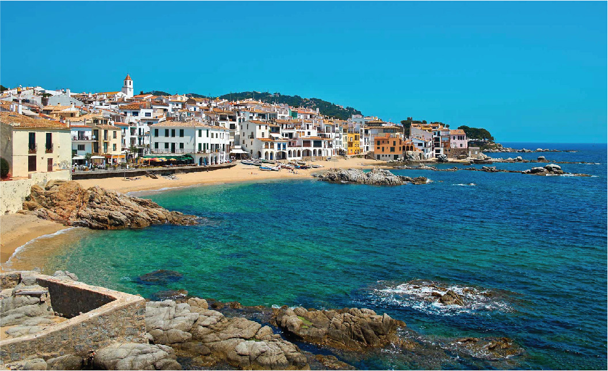
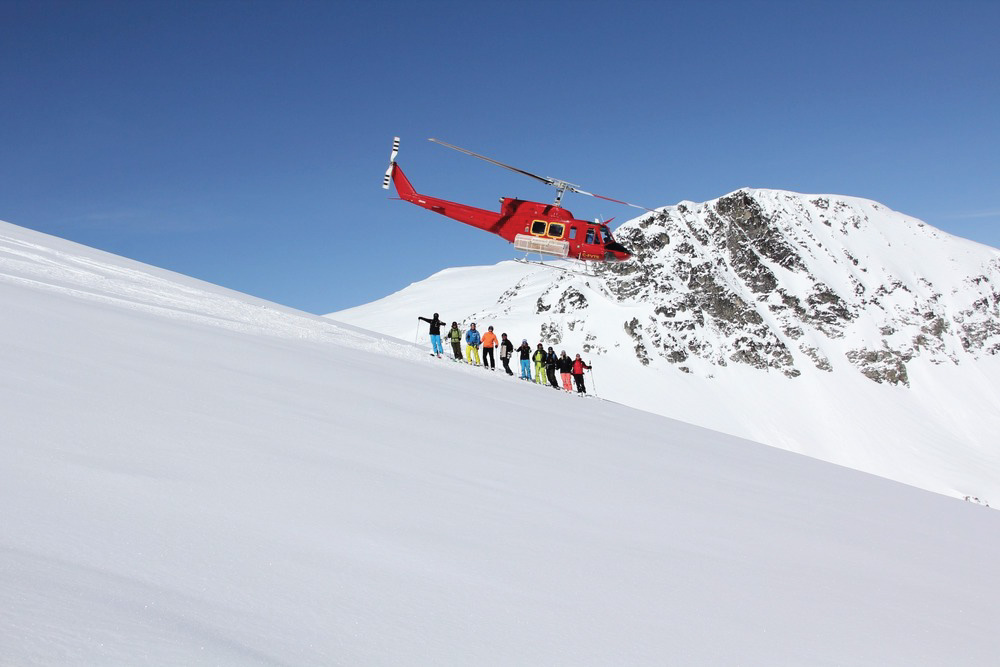
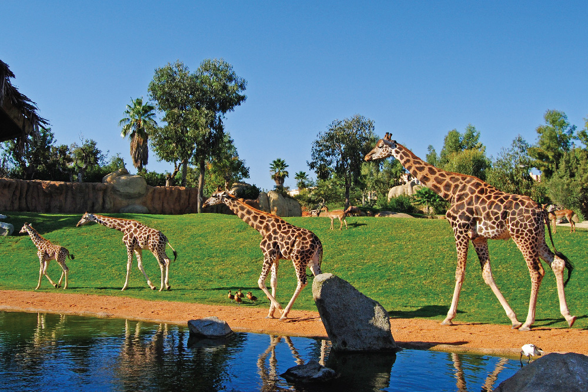
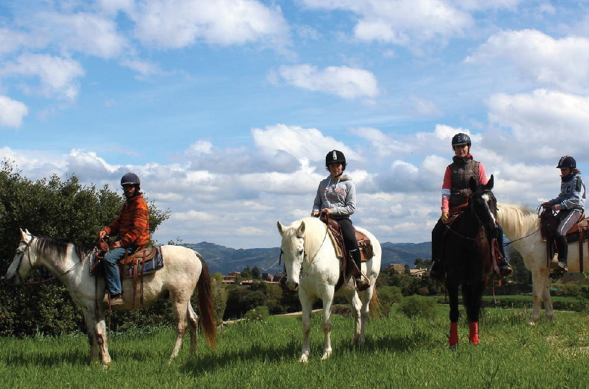
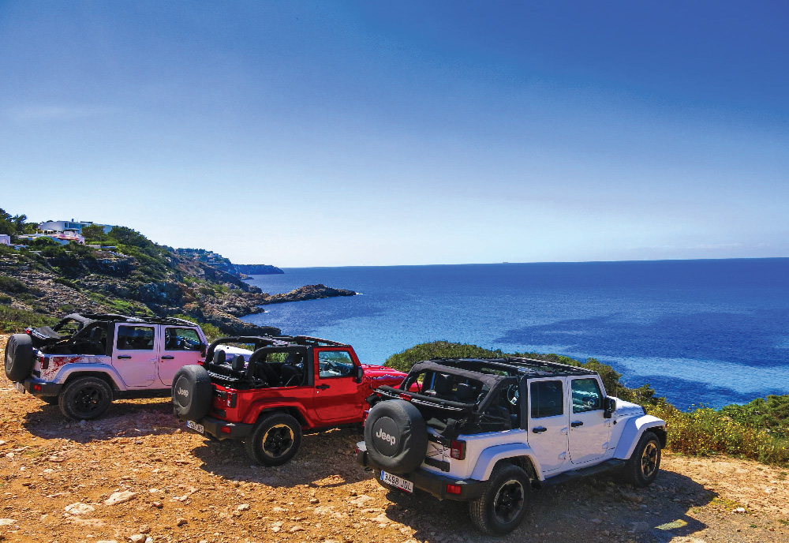
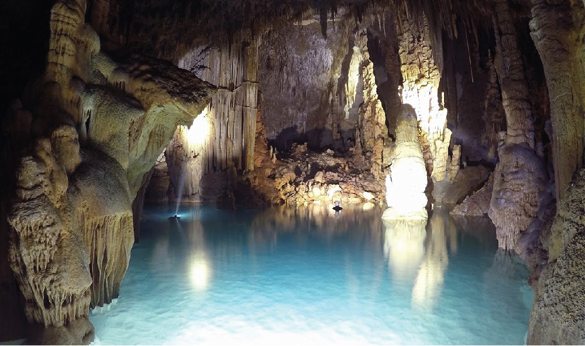
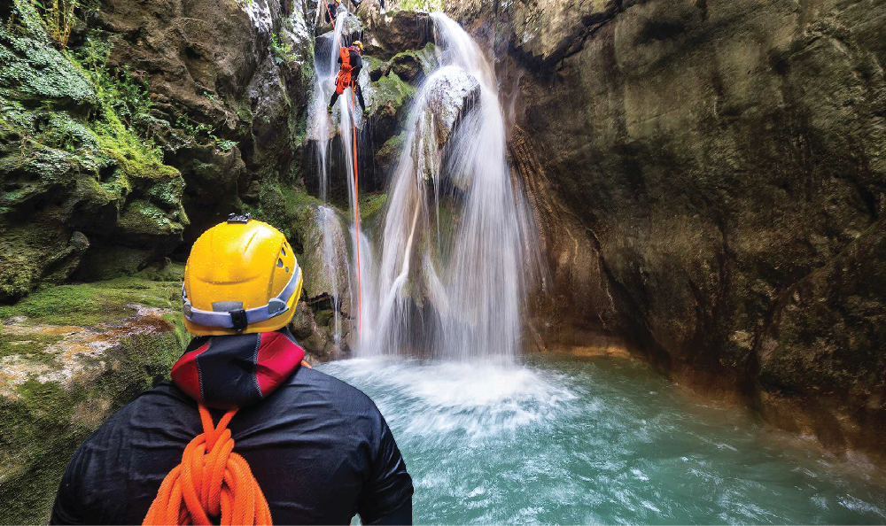
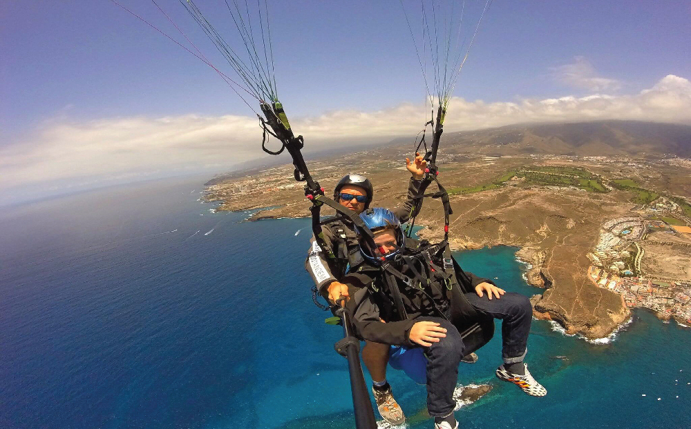
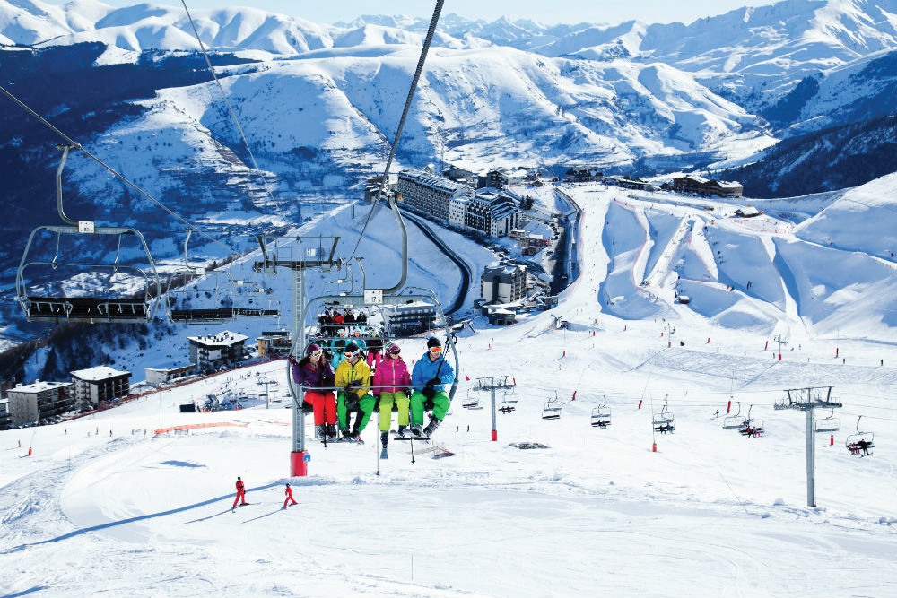

1. Montserrat Monastery and Natural Park Hiking Premium Small Group Tour from Barcelona
Experience the natural splendor of Montserrat and the Benedictine abbey of Santa Maria on this enriching full-day excursion from Barcelona. Escape the crowds and chaos of the city on a Mercedes Cabrio minibus to discover ancient 12th-century carvings and holy pilgrimage sites with a knowledgeable guide. Board a glass-bottomed funicular railway to observe the region’s fascinating flora and fauna then follow a natural trail replete with verdant beauty in Montserrant Natural Park. Enjoy personalized attention from your guide on this small-group tour, where numbers are limited to 15 people.

2. Swim and Breakfast in Calella
We'll explore and enjoy the amazing Costa Barcelona shoreline by swimming an itinerary of 2 kilometers with an experienced local swim guide. A welcome briefing and some warm-up swimming exercises will be made at Calella beach and then we'll jump into the water to discover this incredible spot in Costa Barcelona. We'll swim in a non-competitive way for about 1000 meters to Rosca Grossa island to observe a group of manine birds. The complete group will then return back, either by swimming or walking along the coastal path to our starting point for a typical Catalan breakfast with local products right in front of the beach.

3. Heli-Skiing in Andorra
Take the best of your journey to Andorra and enjoy the real spirit of this small country by exploring its beautiful valleys. Whether you’re new to Heli-Skiing or a veteran of all things steep and deep, make sure to not miss this opportunity to ski down the impressive hills and merge yourself into the marvellous silence of the white snow. Surprise yourself with the the sublime views from the helicopter and come back with a handful of stories and a heart full of memories.

4. Bioparc Valencia Skip the Line Admission Ticket
Float silently through the air, high above the Spanish countryside during this balloon flight experience that includes a meal and a champagne toast. Watch the balloon fill with air, take your seat, and ascend 3,000-feet (914-meters) to look out over Catalonia. Sip a glass of locally sourced cava and enjoy a typical Catalan meal as the wind carries you aloft.

5.Horseback Riding Tour in Natural Park from Barcelona
Gallop through the gorgeous greenery of one of Catalonia’s most majestic natural parks on a half-day horse-riding tour from Barcelona. Suitable for novice and intermediate riders, this exhilarating excursion takes you to some of the region’s most spectacular scenery with a knowledgeable guide. Revitalize with a delicious lunch at a local ranch and enjoy two hours of uninterrupted riding time as you explore the fascinating flora and fauna of the park.

6. IBIZA JEEP TOURS
Leave the clubs behind to discover Ibiza’s natural wonders during this full-day, guided tour in an open-top Jeep. See the clear blue ocean from high atop a cliff and overlook Es Vedra island. Travel under lush plants and see wildlife as you drive through the forest to explore an oceanside cave. Relax and recharge at a remote beach by swimming and snorkelling before the sun sets.

7. Small-Group Cova de Coloms Sea Caving Tour in Mallorca
Appease your adventurous side with a thrilling 6-hour tour of Mallorca’s Cova de Coloms sea caves, including hotel pickup and drop-off. Scramble through rocky passageways, wade through underground lakes and marvel over glistening stalagmites, as you explore some of the most impressive caves in the Balearic Islands. This small-group adventure is limited to eight people, all equipment is provided and no experience is necessary.

8. Guided Visit: Canyoning in Granada, Lentegi Canyon
Get out of the city and go canyoning in the wild nature outside of Granada on this full-day tour. Depart from Granada in an air-conditioned vehicle and make your way to Lentegi Canyon. In the company of a mountain guide, receive a safety briefing before suiting up for rappelling and jumping. Enjoy light snacks and a midday lunch.

9.Paragliding Tandem Flight in Teide National Park
Fly like a bird above Teide National Park, and feel your adrenaline rush, on this tandem paragliding experience with an expert pilot. After a brief orientation from your pilot, take off from one of the highest peaks in Spain. Soar over the valley of La Orotava, the tourist town of Puerto de la Cruz, and more.

10. Pyrenees Ski Day Trip from Barcelona
Immerse yourself in the mountainous majesty of the Pyrenees on a full-day skiing trip from Barcelona. Leave the bustling metropolis of the Catalonian capital and travel through scenic countryside in a luxury coach. Arrive in the snow-smothered mountains and take to the slopes for an exhilarating day of skiing in La Molina and Masella, two of Europe’s most popular resorts. Enjoy the convenience of included equipment hire and a ski pass on this adventurous excursion.
